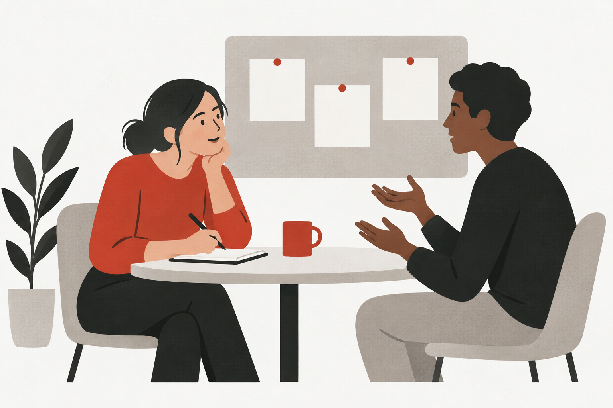

Nestlé / Selected work
Learning Platform Research
Understanding how employees discover learning, complete essential tasks and make sense of a personalised platform.

01 / Context & contribution
The work in context
A workplace learning platform serves different intentions: completing required learning, developing skills and exploring future opportunities. This study examined how those intentions translate into navigation, expectations and confidence in the experience.
My focus
My focus was employee research: connecting research questions and hypotheses with observed behaviour, then translating the evidence into usability and adoption recommendations.
02 / Approach
How the work was structured
Frame the study
Clarify the platform’s value, intended audiences and core use cases with stakeholders. Turn assumptions into research questions that can be examined through interviews and practical tasks.
Observe real tasks
Combine interviews with moderated tasks around discovering learning, navigating the platform and understanding progress. Compare what participants say with what they do.
Connect the evidence
Bring together session observations and post-session ratings. Map expected task paths alongside observed behaviour to make navigation and comprehension issues easier to discuss.
Organise recommendations
Separate usability changes from adoption support, and distinguish near-term recommendations from longer-term experience principles.
03 / Design reasoning
What the approach makes possible
A satisfaction rating and a successful task are different kinds of evidence. Combining them allows a researcher to investigate the reasons behind a rating rather than treating a positive score as proof of an effortless experience.
04 / Outputs & next steps
What the work contributed
- Research questions and hypothesis assessment
- Use-case analysis and task-flow comparisons
- Usability and adoption recommendations
- A proposed plan for continued behavioural measurement
Delivery & follow-up
The work produced a research report and recommendations. Prioritisation, implementation and subsequent measurement are follow-on activities; this case does not claim a measured post-launch improvement.
This account describes collaborative work through my research and design focus. Internal names, participant information, findings, business measures and source materials are omitted. Process descriptions are rewritten for public presentation.
Explore my research practice